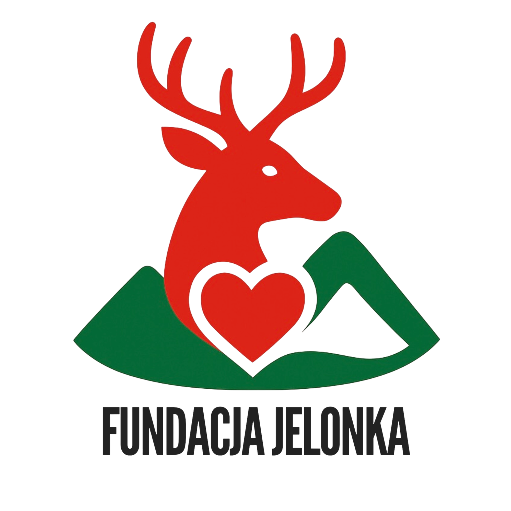
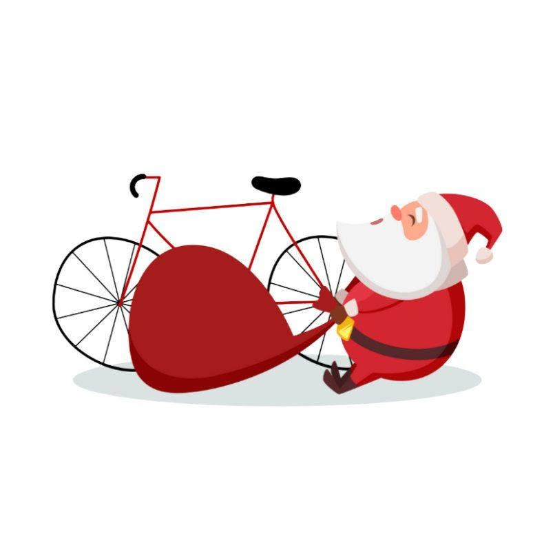
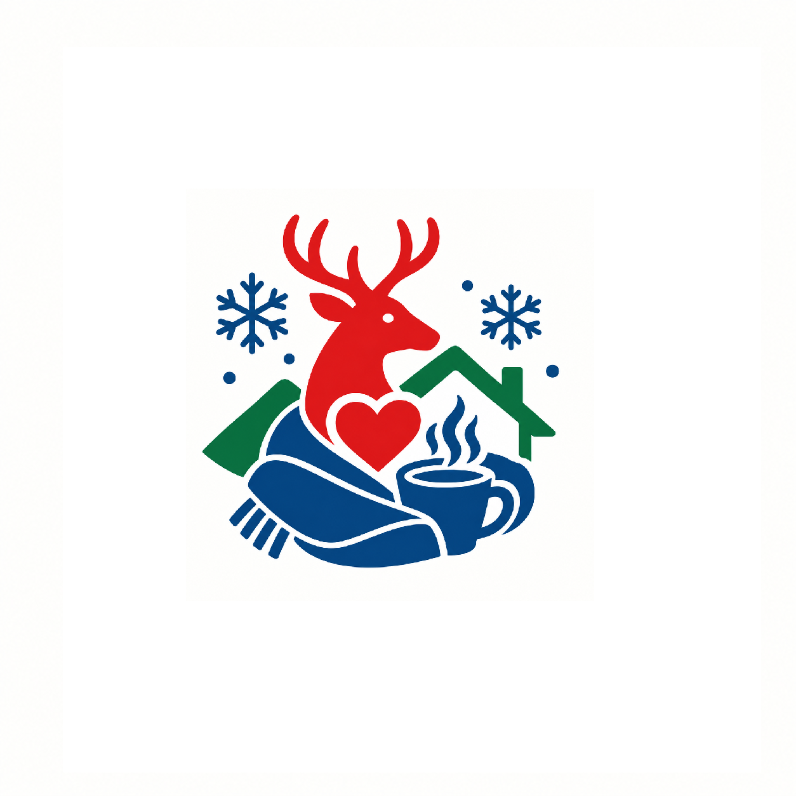
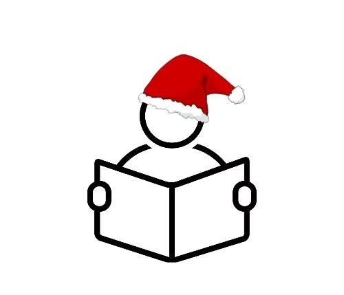
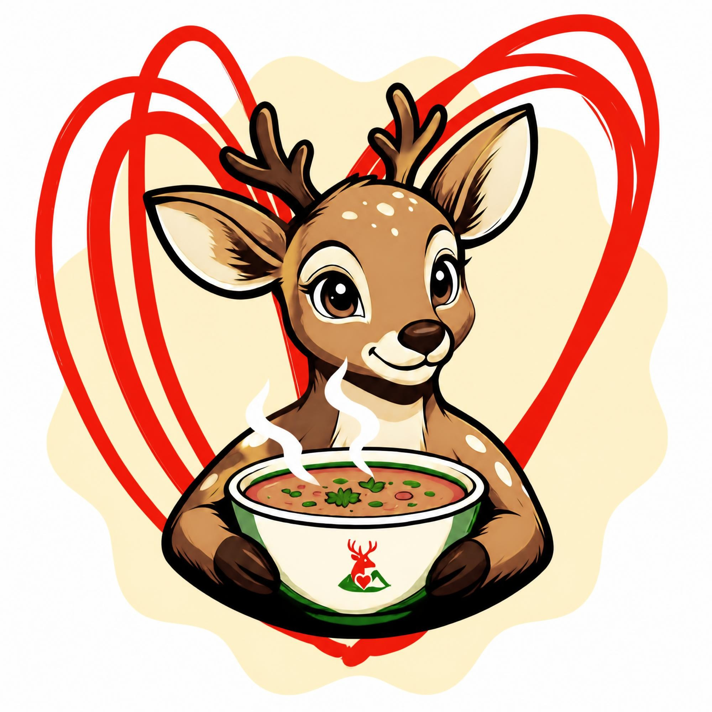

Wierzymy, że dobro zaczyna się blisko nas. Łączymy ludzi, pomysły i działania, aby wspólnie tworzyć lepsze miejsce do życia.
Poznaj nasze inicjatywy Wesprzyj nasFundacja Jelonka powstała z potrzeby działania, pomagania i budowania lokalnej wspólnoty. Bliskie są nam sprawy mieszkańców Jeleniej Góry i okolic, a szczególnie osób, które potrzebują wsparcia, życzliwości i obecności drugiego człowieka.
Wierzymy, że nawet małe gesty mogą przynosić wielkie zmiany. Dlatego inicjujemy projekty, angażujemy lokalną społeczność i zachęcamy do wspólnego działania.
Dobro ma wiele twarzy. Tworzymy i rozwijamy inicjatywy, które łączą mieszkańców, odpowiadają na lokalne potrzeby i zmieniają dobre pomysły w konkretne działania.

Wyjątkowa świąteczna inicjatywa, która łączy ludzi wokół idei dzielenia się dobrem. Wspólnie przygotowujemy prezenty i dostarczamy świąteczną radość tym, którzy na nią czekają.

Inicjatywa pomocowa skierowana do osób doświadczających bezdomności i znajdujących się w trudnej sytuacji życiowej. W okresie zimowym szczególnie ważne są ciepło, bezpieczeństwo i zwykła ludzka obecność.

Inicjatywa, która rozbudza miłość do książek, wspiera czytelnictwo i pokazuje, że każda historia może otworzyć przed dzieckiem niezwykły świat wyobraźni.

Inicjatywa, której celem jest budowanie sieci lokalnych restauracji i barów gotowych włączyć się w pomoc osobom potrzebującym.
Nasze działania opieramy na wartościach, które są fundamentem każdej dobrej inicjatywy.
Dostrzegamy potrzeby innych i reagujemy z troską.
Wierzymy w siłę ludzi, którzy potrafią działać razem.
Nie pozostajemy obojętni. Zamieniamy pomysły w działania.
Każdy gest ma znaczenie, a dobro warto przekazywać dalej.
Każda forma wsparcia ma znaczenie. Możesz pomóc nam realizować kolejne inicjatywy, przekazać darowiznę rzeczową lub zaangażować się w działania Fundacji Jelonka.
Skontaktuj się z namiMasz pomysł na wspólne działanie? Chcesz wesprzeć nasze projekty lub dowiedzieć się więcej o Fundacji? Napisz do nas!
E-mail: fundacjajelonka@gmail.com